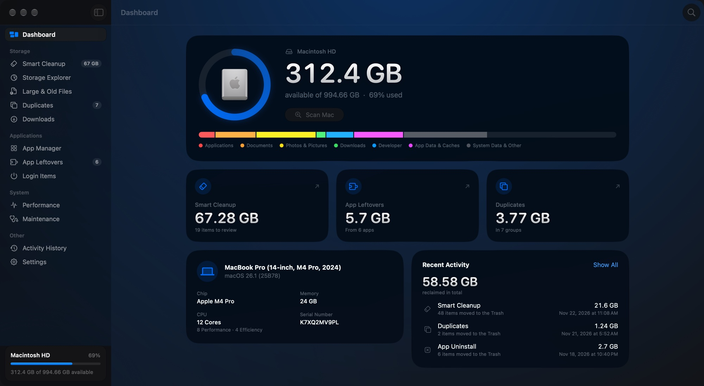
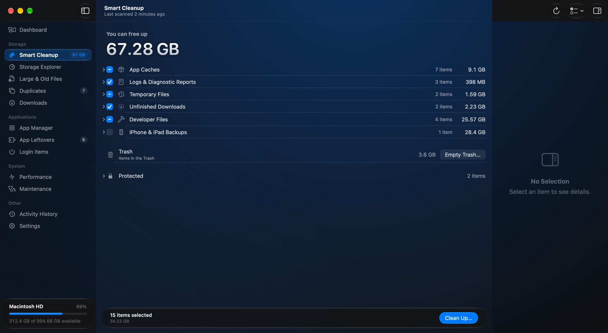
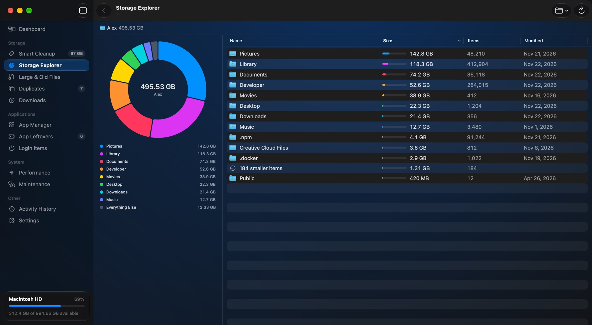
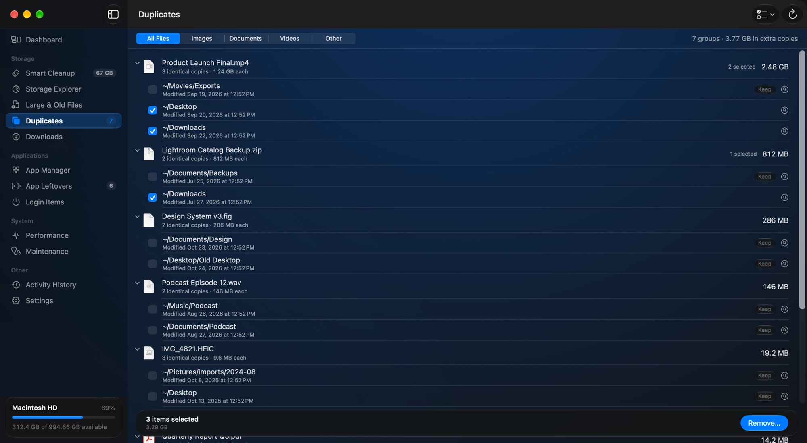
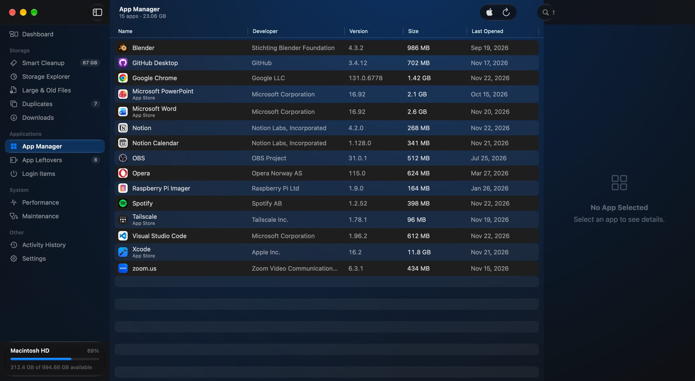
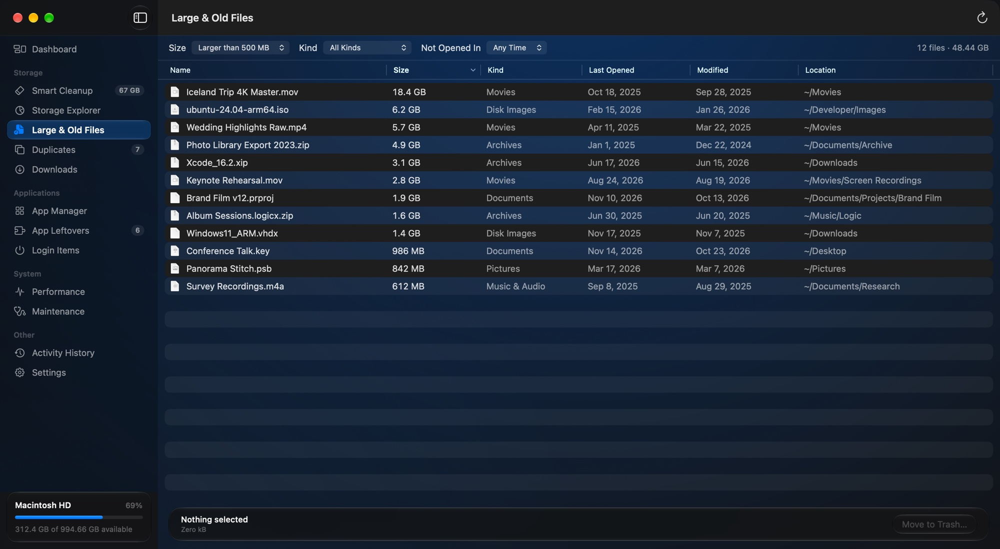
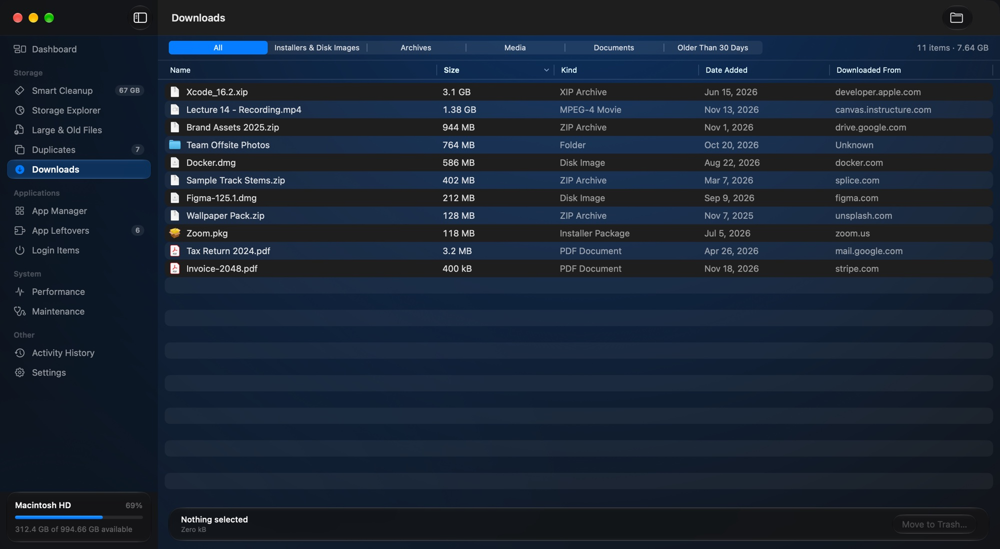
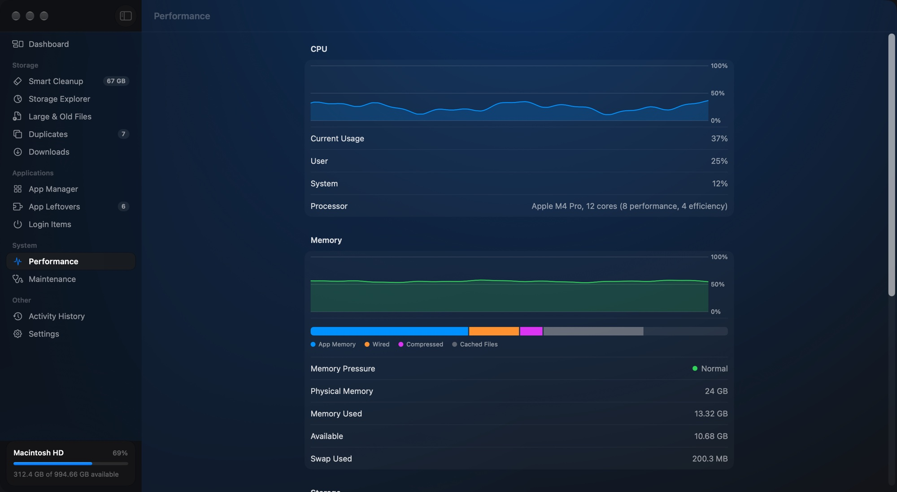
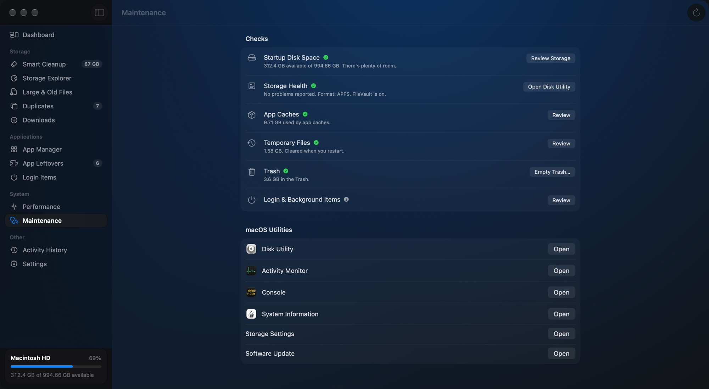

Clean up your Mac.
Get your storage back.
Tidy finds the files taking up space on your Mac, from old caches and app leftovers to forgotten downloads and duplicates. Review what's there and clear out what you don't need.

Smart Cleanup
More space. Less clutter.
Find unnecessary files across your Mac in one scan. Tidy groups everything by type, shows you what each file does, and recommends what you can remove.
-
RecommendedCaches, logs, and temporary files that apps can recreate.
-
Review RequiredFiles that might still be useful. Review them before removal.
-
ProtectedFiles that should stay right where they are.


Storage Explorer
See where your space goes.
Explore your Mac's storage by folder. Find the directories taking up the most room, drill down into individual files, and preview them with Quick Look before moving them to the Trash.
Duplicates
Keep one. Lose the rest.
Find duplicate files taking up unnecessary space. Tidy checks that the original copy is still there before removing anything.


App Manager
Take control of your apps.
See what's installed, find apps you no longer use, and remove them along with their leftover files. See your login items and what's running in the background.
Large & Old Files
Find the files you've forgotten.
Sort files by size and last modified date. Find old exports, oversized downloads, and files you no longer need.


Downloads
Clear out your Downloads.
Find old installers, archives, and other files collecting dust in your Downloads folder.
Performance & Maintenance
Keep your Mac running smoothly.
View system activity and run maintenance tasks from one place.


Safety
Cleaning without the guesswork.
Tidy checks every file before removing it. You decide what goes.
- Three levels of protectionEvery item is marked Recommended, Review Required, or Protected. Only recommended files are selected by default.
- You're in controlReview every item before cleanup. Permanent deletion always asks first.
- Checked before removalFiles are verified again before they're moved. System folders and SIP-protected files are off limits.
- Apps stay undisturbedFiles that belong to an app that's running are left alone.
- The Trash is your safety netFiles are moved to the Trash by default. Activity History lets you restore them.
- Duplicates handled carefullyTidy verifies the copy you're keeping before removing a duplicate.
Privacy
Your data stays yours.
Tidy runs locally on your Mac. No accounts, analytics, uploads, or network connections.
No administrator password. No need to disable System Integrity Protection.
- Files and FoldersTidy requests access to Documents, Desktop, and Downloads when needed.
- Full Disk AccessOptional access to additional locations, including app containers and device backups.
- AutomationUsed only when you ask Tidy to empty the Trash or list your login apps.